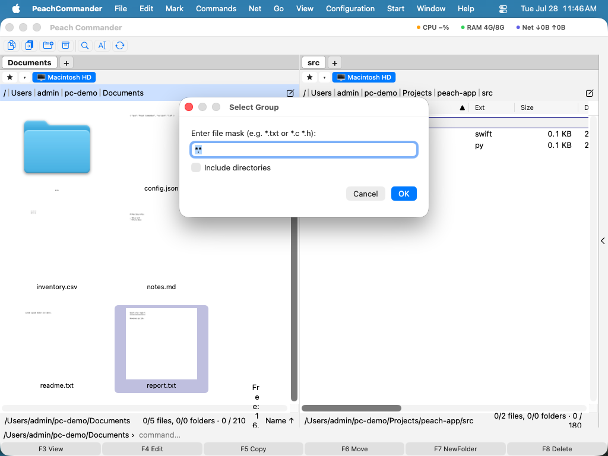

Dateien auswählen
Bevor Sie etwas kopieren, verschieben, löschen oder packen, teilen Sie Peach Commander zuerst mit, auf welche Objekte eine Aktion angewendet werden soll. Das Objekt, auf dem Ihr Cursor sitzt, ist immer das aktuelle Objekt, aber Sie können auch eine oder viele Dateien und Ordner markieren, sodass ein Befehl auf sie alle gleichzeitig angewendet wird. Markierte Objekte heben sich durch eine eigene Namensfarbe im Panel hervor.
Dateien und Ordner markieren
- Klicken Sie auf eine Zeile, um den Cursor darauf zu bewegen. Ein einfacher Klick wählt nur dieses eine Objekt aus.
- Um mehrere Objekte gleichzeitig zu markieren, halten Sie Cmd gedrückt und klicken Sie auf jedes einzelne, oder halten Sie Shift gedrückt und klicken Sie, um einen Bereich zu markieren.
- Um das Objekt unter dem Cursor zu markieren und in einer Bewegung nach unten zu wandern, drücken Sie Insert. Drücken Sie es wiederholt, um schnell eine Folge aufeinanderfolgender Objekte zu markieren. Die Leertaste schaltet ebenfalls die Markierung des aktuellen Objekts um (und zeigt die Größe eines Ordners an).
- Um alles im Panel zu markieren, wählen Sie Markieren > Alle auswählen (Ctrl+Num+) oder drücken Sie Cmd+A. Wählen Sie Markieren > Auswahl aufheben (Ctrl+Num-), um alle Markierungen zu entfernen.
Nach einem Muster auswählen oder abwählen
- Wählen Sie Markieren > Gruppe auswählen… (Num+), um Objekte hinzuzufügen, deren Namen einem Muster entsprechen, oder Markieren > Gruppe abwählen… (Num-), um passende Objekte aus den aktuellen Markierungen zu entfernen.
- Tippen Sie eine Platzhaltermaske. Verwenden Sie
*für beliebige Zeichen und?für ein einzelnes Zeichen. Trennen Sie mehrere Masken mit einem Semikolon und listen Sie Ausnahmen nach einem senkrechten Strich auf — zum Beispiel markiert*.jpg;*.pngalle Bilder, und*.*|*.bakmarkiert alles außer Sicherungsdateien.

(Abbildung: Dateien anhand einer Platzhaltermaske markieren.)Umkehren, gleiche Erweiterung und wiederherstellen
- Auswahl umkehren (Num*, Menü Markieren) kehrt jede Markierung um: markierte Objekte werden unmarkiert und umgekehrt — praktisch für „alles außer diesen".
- Alle mit gleicher Erweiterung auswählen (Alt+Num+, Menü Markieren) markiert jede Datei, die die Erweiterung des Objekts unter dem Cursor teilt, sodass ein Tastendruck zum Beispiel alle
.pdf-Dateien erfasst. - Auswahl wiederherstellen (Num/, Menü Markieren) bringt Ihren vorherigen Satz von Markierungen zurück — nützlich, wenn ein Befehl sie gelöscht hat oder Sie die falsche Gruppe markiert haben.
Tastaturkürzel
| Aktion | Taste |
|---|---|
| Markierung umschalten, nach unten wandern | Insert |
| Markierung umschalten (aktuelles Objekt) | Space |
| Alle auswählen / Auswahl aufheben | Ctrl+Num+ / Ctrl+Num- |
| Alle auswählen (alternativ) | Cmd+A |
| Gruppe nach Maske auswählen | Num+ |
| Gruppe nach Maske abwählen | Num- |
| Auswahl umkehren | Num* |
| Alle mit gleicher Erweiterung auswählen | Alt+Num+ |
| Vorherige Auswahl wiederherstellen | Num/ |
Hinweise
- Markierungen und der Cursor sind unabhängig voneinander: Das Bewegen des Cursors mit den Pfeiltasten ändert nicht, was markiert ist.
- Der Eintrag des übergeordneten Ordners (
..) kann niemals markiert werden. - Gruppe auswählen, Gruppe abwählen und Auswahl umkehren treffen anhand des Dateinamens, sodass Sie Ordner je nach den Optionen des Dialogs einbeziehen oder auslassen können.
- Nachdem ein Kopier-, Verschiebe- oder Löschvorgang abgeschlossen ist, werden erfolgreich verarbeitete Objekte automatisch unmarkiert, während alle fehlgeschlagenen markiert bleiben, sodass Sie sie erneut versuchen können.